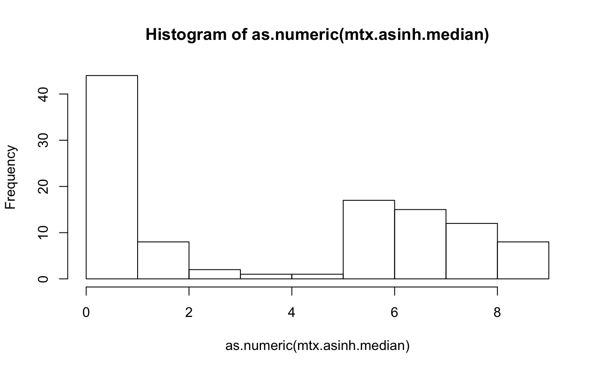

basicIntro.RmdRNA-seq data comes from many sources in many forms. The goal of this package is to collect a full bag of tricks and techniques to transform that variety into our (that is, Cory Funk’s) preferred standard form.
Read in a small tsv file included in this package
file <- system.file(package="rnaSeqNormalizer", "extdata", "tbl.ensg.column.16x10.tsv")
tbl.small <- read.table(file, sep="\t", as.is=TRUE)
checkEquals(dim(tbl.small), c(16, 10))
#> [1] TRUE
head(tbl.small)
#> ensembl_id X11344_TCX X11316_TCX X11431_TCX X11341_TCX X11289_TCX X11327_TCX X11334_TCX X11480_TCX X11471_TCX
#> 1 ENSG00000006659 0 0 0 0 0 0 0 0 0
#> 2 ENSG00000167964 1014 964 1322 1219 1480 787 955 1779 2181
#> 3 ENSG00000169814 430 326 388 636 169 185 213 188 111
#> 4 ENSG00000196369 263 131 353 298 24 59 106 93 77
#> 5 ENSG00000234465 93 127 174 154 167 161 111 122 179
#> 6 ENSG00000235499 1 7 2 10 1 3 3 1 1Use the “asinh” algorithm and use maximum median value to select among duplicated gene symbols sometimes produced in the mapping from ENSG ids.
normalizer <- rnaSeqNormalizer(tbl.small, algorithm="asinh", duplicate.selection.statistic="median")
mtx.asinh.median <- getNormalizedMatrix(normalizer)
fivenum(mtx.asinh.median)
#> [1] 0.000000 0.000000 3.434929 6.563849 8.531491
head(mtx.asinh.median)
#> X11344_TCX X11316_TCX X11431_TCX X11341_TCX X11289_TCX X11327_TCX X11334_TCX X11480_TCX X11471_TCX
#> TRPV1 6.234415 6.206580 6.612043 6.948898 7.1869016 6.8394776 6.4677011 6.568080 6.6770850
#> TOP1P1 0.000000 0.000000 0.000000 0.000000 1.4436355 0.8813736 0.8813736 0.000000 0.0000000
#> SRGAP2B 6.265305 5.568359 6.559617 6.390243 3.8716348 4.7707564 5.3566085 5.225776 5.0369948
#> RPL41 8.446771 7.724005 8.427269 8.364042 7.8119736 8.4189187 8.5314905 8.446341 7.7765352
#> RP11-507J18.5 1.443635 0.000000 0.000000 1.818446 0.8813736 0.0000000 1.4436355 1.818446 0.8813736
#> RP11-216N14.9 0.000000 0.000000 0.000000 0.000000 0.0000000 0.0000000 0.0000000 0.000000 0.0000000
hist(as.numeric(mtx.asinh.median))
sessionInfo()
#> R version 3.6.1 (2019-07-05)
#> Platform: x86_64-apple-darwin15.6.0 (64-bit)
#> Running under: macOS Mojave 10.14.5
#>
#> Matrix products: default
#> BLAS: /Library/Frameworks/R.framework/Versions/3.6/Resources/lib/libRblas.0.dylib
#> LAPACK: /Library/Frameworks/R.framework/Versions/3.6/Resources/lib/libRlapack.dylib
#>
#> locale:
#> [1] en_US.UTF-8/en_US.UTF-8/en_US.UTF-8/C/en_US.UTF-8/en_US.UTF-8
#>
#> attached base packages:
#> [1] parallel stats4 stats graphics grDevices utils datasets methods base
#>
#> other attached packages:
#> [1] RUnit_0.4.32 rnaSeqNormalizer_1.0.12 DESeq_1.36.0 lattice_0.20-38
#> [5] locfit_1.5-9.1 EnsDb.Hsapiens.v79_2.99.0 ensembldb_2.8.1 AnnotationFilter_1.8.0
#> [9] GenomicFeatures_1.36.4 GenomicRanges_1.36.1 GenomeInfoDb_1.20.0 org.Hs.eg.db_3.8.2
#> [13] AnnotationDbi_1.46.1 IRanges_2.18.3 S4Vectors_0.22.1 Biobase_2.44.0
#> [17] BiocGenerics_0.30.0 BiocStyle_2.12.0
#>
#> loaded via a namespace (and not attached):
#> [1] httr_1.4.1 splines_3.6.1 bit64_0.9-7 assertthat_0.2.1
#> [5] BiocManager_1.30.9 blob_1.2.0 GenomeInfoDbData_1.2.1 Rsamtools_2.0.3
#> [9] yaml_2.2.0 progress_1.2.2 pillar_1.4.2 RSQLite_2.1.2
#> [13] backports_1.1.5 digest_0.6.21 RColorBrewer_1.1-2 XVector_0.24.0
#> [17] htmltools_0.4.0 Matrix_1.2-17 XML_3.98-1.20 pkgconfig_2.0.3
#> [21] biomaRt_2.40.5 genefilter_1.66.0 bookdown_0.14 zlibbioc_1.30.0
#> [25] xtable_1.8-4 BiocParallel_1.18.1 tibble_2.1.3 annotate_1.62.0
#> [29] SummarizedExperiment_1.14.1 lazyeval_0.2.2 survival_2.44-1.1 magrittr_1.5
#> [33] crayon_1.3.4 memoise_1.1.0 evaluate_0.14 fs_1.3.1
#> [37] MASS_7.3-51.4 tools_3.6.1 prettyunits_1.0.2 hms_0.5.2
#> [41] matrixStats_0.55.0 stringr_1.4.0 DelayedArray_0.10.0 Biostrings_2.52.0
#> [45] compiler_3.6.1 pkgdown_1.4.1 rlang_0.4.0 grid_3.6.1
#> [49] RCurl_1.95-4.12 bitops_1.0-6 rmarkdown_1.16 DBI_1.0.0
#> [53] curl_4.2 R6_2.4.0 GenomicAlignments_1.20.1 knitr_1.25
#> [57] rtracklayer_1.44.4 bit_1.1-14 zeallot_0.1.0 rprojroot_1.3-2
#> [61] ProtGenerics_1.16.0 desc_1.2.0 stringi_1.4.3 Rcpp_1.0.2
#> [65] geneplotter_1.62.0 vctrs_0.2.0 xfun_0.10